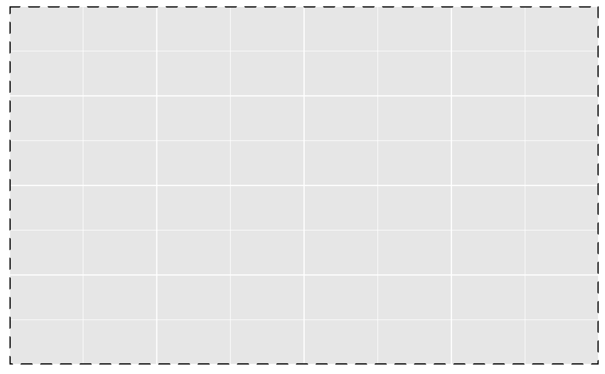
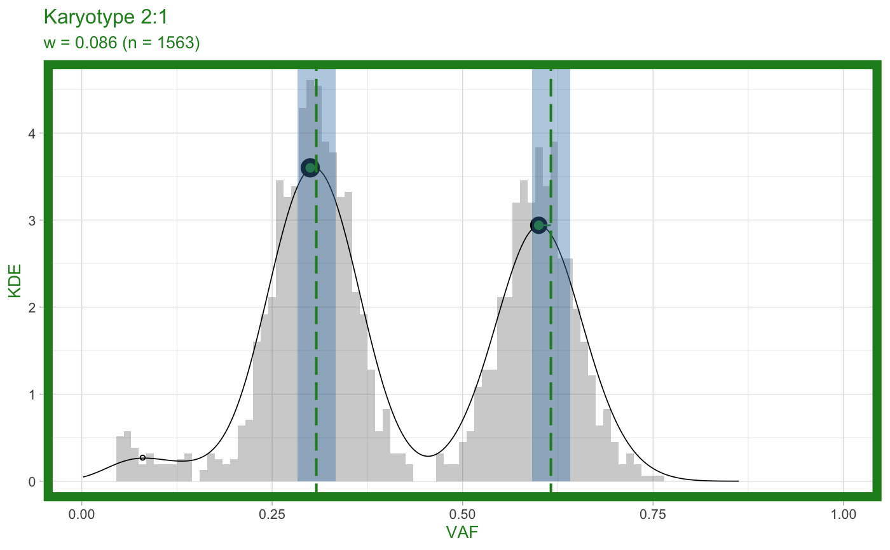
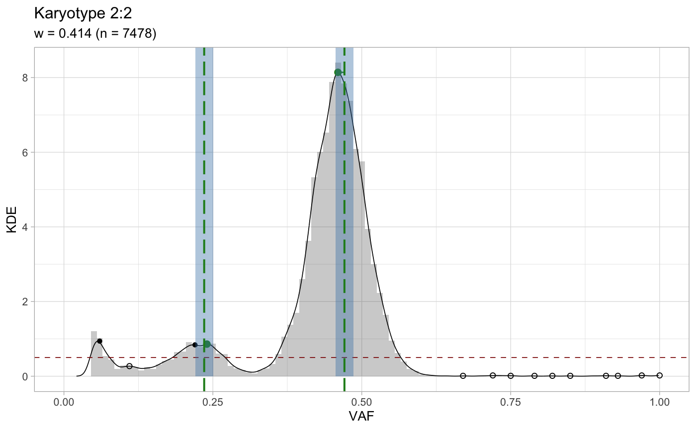

This function carries out a peak-detection
analysis based on KDE and the package peakPick
in order to determine if the mutations that map to a
certain karyotype have an allelic frequency that is
consistent with the Major and minor alleles of the
segment, and the tumour purity. A score is produced
as a linear combination of the distance of the actual
peak to the expected one, derived with standard equations
for CNA analysis.
analyze_peaks(x, karyotypes = c("1:0", "1:1", "2:1", "2:0", "2:2"), min_karyotype_size = 0.05, adjust = 1, min_density = 0.5, neighlim = 1, matching_epsilon = 0.015, ...)
Arguments
| x | An object of class |
|---|---|
| karyotypes | The list of karyotypes to test. By default LOH regions (A, AA),
diploid regions (AB), and amplification regions (AAB, AABB). These correspond to
|
| min_karyotype_size | Karyotypes are subset by their size (normalized for the number of input mutations). Karyotypes smaller than this value are removed from analysis. |
| adjust | KDE adjust density parameter; see |
| min_density | Peaks in the VAF distribution below this density value will not be used to match the expected peaks. This is used to remove low-density peaks due to noise and miscalled CNAs. |
| neighlim | Parameter for the |
| matching_epsilon | Peaks at a location are matched with a range of epsilon/2
left and right. By default ( |
| ... | Parameters forwarded to |
Value
An object of class cnaqc, modified to hold the results from this analysis.
See the vignette to see how to extract and plot the results.
Examples
data('example_dataset_CNAqc', package = 'CNAqc') x = init(example_dataset_CNAqc$snvs, example_dataset_CNAqc$cna,example_dataset_CNAqc$purity)#> [ CNAqc - CNA Quality Check ] #>#>#> Input n = 13141 mutations for 267 CNA segments (267 clonal, 0 subclonal) #> Mapped. n = 12963 mutations mapped to clonal segments (~99% of input)x = analyze_peaks(x)#> [ QC analysis with peaks detection ] #> #> CNAqc n = 13141 mutations for 267 CNA segments (267 clonal, 0 subclonal) #> Purity 89% cellularity #> Karyotypes 7478 (2:2); 1893 (4:2); 1625 (3:2); 1563 (2:1); 312 (3:0); 81 (2:0); 4 (16:2); 2 (25:2); 2 (3:1); 1 (106:1); 1 (26:2); 1 (99:1) #> #> Peaks QC FALSE #> CCF FALSE #> #> =-=-=-=-=-=-=-=-=-=-=-=-=-=-=-=-=-=-=-=-=-=-=-=-=-=-=-=-=-=-=-=-=-=-=-=-=-=-=-=-=- #> Analysing ~ karyotypes 1:0, 1:1, 2:1, 2:0, 2:2 ~ 9041 mutations ~ min. k = 657 #> =-=-=-=-=-=-=-=-=-=-=-=-=-=-=-=-=-=-=-=-=-=-=-=-=-=-=-=-=-=-=-=-=-=-=-=-=-=-=-=-=- #> # A tibble: 3 x 5 #> karyotype n n_proportion QC norm_prop #> <chr> <int> <dbl> <lgl> <dbl> #> 1 2:2 7478 0.569 TRUE 0.827 #> 2 2:1 1563 0.119 TRUE 0.173 #> 3 2:0 81 0.00616 FALSE NA #> #> Peak detector p = 0.89 ~ KDE a = 1 c = 0.5 ~ peakPick n = 1 epsilon = 0.015 #> #> =-=-=-=-=-=-=-=- #> Results table #> =-=-=-=-=-=-=-=- #> # A tibble: 4 x 10 #> mutation_multip… karyotype peak x y discarded offset matched weight #> <dbl> <chr> <dbl> <dbl> <dbl> <lgl> <dbl> <lgl> <dbl> #> 1 2 2:1 0.616 0.6 2.94 FALSE 0.0159 FALSE 0.0864 #> 2 1 2:1 0.308 0.3 3.6 FALSE 0.00796 TRUE 0.0864 #> 3 2 2:2 0.471 0.46 8.14 FALSE 0.0109 TRUE 0.414 #> 4 1 2:2 0.235 0.24 0.86 FALSE -0.00455 TRUE 0.414 #> # … with 1 more variable: score <dbl> #> #> Fit score: 0.00468956233367035 #>print(x)#> CNAqc n = 13141 mutations for 267 CNA segments (267 clonal, 0 subclonal) #> Purity 89% cellularity #> Karyotypes 7478 (2:2); 1893 (4:2); 1625 (3:2); 1563 (2:1); 312 (3:0); 81 (2:0); 4 (16:2); 2 (25:2); 2 (3:1); 1 (106:1); 1 (26:2); 1 (99:1) #> #> Peaks QC TRUE ~ s = 0.00468956233367035 #> # A tibble: 4 x 10 #> mutation_multip… karyotype peak x y discarded offset matched weight #> <dbl> <chr> <dbl> <dbl> <dbl> <lgl> <dbl> <lgl> <dbl> #> 1 2 2:1 0.616 0.6 2.94 FALSE 0.0159 FALSE 0.0864 #> 2 1 2:1 0.308 0.3 3.6 FALSE 0.00796 TRUE 0.0864 #> 3 2 2:2 0.471 0.46 8.14 FALSE 0.0109 TRUE 0.414 #> 4 1 2:2 0.235 0.24 0.86 FALSE -0.00455 TRUE 0.414 #> # … with 1 more variable: score <dbl> #> CCF FALSE #>#> $score #> [1] 0.004689562 #> #> $matches #> # A tibble: 4 x 10 #> mutation_multip… karyotype peak x y discarded offset matched weight #> <dbl> <chr> <dbl> <dbl> <dbl> <lgl> <dbl> <lgl> <dbl> #> 1 2 2:1 0.616 0.6 2.94 FALSE 0.0159 FALSE 0.0864 #> 2 1 2:1 0.308 0.3 3.6 FALSE 0.00796 TRUE 0.0864 #> 3 2 2:2 0.471 0.46 8.14 FALSE 0.0109 TRUE 0.414 #> 4 1 2:2 0.235 0.24 0.86 FALSE -0.00455 TRUE 0.414 #> # … with 1 more variable: score <dbl> #> #> $plots #> $plots$`1:0`#> #> $plots$`1:1`#> #> $plots$`2:1`#> Warning: Removed 2 rows containing missing values (geom_bar).#> Warning: Removed 32 rows containing missing values (geom_path).#> #> $plots$`2:0`#> #> $plots$`2:2`#> Warning: Removed 2 rows containing missing values (geom_bar).#> Warning: Removed 13 rows containing missing values (geom_path).#> #>